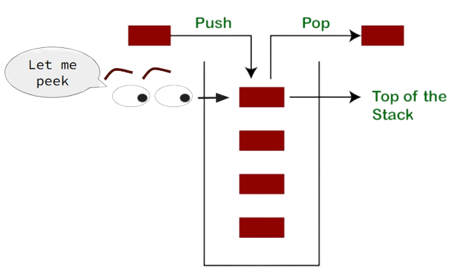
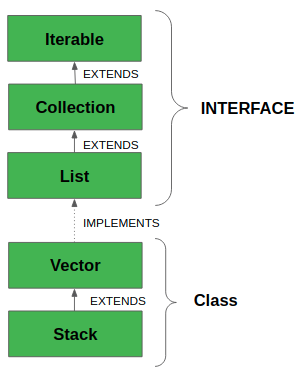

Stack & Queue#
In this lesson, we will learn about two Collection classes, Stack and Queue.
Overview#
A Stack is an Abstract Data Type (ADT)[1] that is provided by the Java Collections Framework. It is a Generic just like ArrayList and therefore can hold only Objects. A Stack is a concept that is found in many different programming lanagues. In Java, a Stack is also a concrete class.[2] The two most common operations to perform on a Stack is push (add an item to the data structure) and pop (remove an item from the data structure). As the name stack infers, you can think of the data structure like a stack of books. To add a book to the stack, you push it to the top. To remove a book from the top of the stack, you pop it off. Fortunately, the API that invoke the behaviors have the same name.
Stack<Book> books = new Stack<>();
books.push(new Book("Misquoting Jesus"));
books.push(new Book("The Da Vinci Code"));
Book top = books.pop(); // the book on top of the stack is "The Da Vinci Code"
A Queue is a fancy word for a line, as in the line you stand in while waiting to get into the concert. In proper English, as spoken in Great Britian, you don’t stand in the line, you stand in the queue. The data structure works just like queue you stand in. When you are added to the queue, you go to the end of the line. The next person allowed into the concert, the one to come out of the line next, is the person at the front of the line.
Stack#
Stacks are a super simple data structure. They are an ordered collection of elements, meaning that where elements are located in the data structure is instrumental in how it behaves. The most important position in the stack is being on top. Elements are pulled off the top of the stack when we pop, and they are added to the top of the stack when we push. There are times we want to know which element is on top without removing it, which we can do with the API, peek.

Stacks are used extensively used by Java (all programming languages, really) when methods are called. When a method is invoked, a data structure called a Stack Frame is pushed onto The Stack. A Stack Frame contains all the method arguments, local variables, and the return address of the calling method. We need the return address so that the computer knows where to resume execution when the method finishes.
The Stack is a special area of memory that stores Stack Frames. The Stack grows just like the data structure grows. New stack frames are pushed to the top of the stack. Old stack frames are popped off the top. The stack has a maximum size that can, at times, not be large enough. For example, a poorly coded recursive method without a good exit case may call itself infinitely. At each recursive call, a new stack frame is added to the stack. After a while, the stack runs out of space and the stack frames overflow. This is called a Stack Overflow Exception.
LIFO#
A Stack is “LIFO”: Last In First Out. This means that the last item that was pushed onto the stack is the item that is popped out.
class Stack<E>#
In Java, we can get a stack implementation from the Stack class. It is a concrete class and can be instantiated directly. It is NOT and interface. What is especially nice about the Stack class is that it implements the stack behaviors with the expected names; it provides methods with the names pop, push and peek.
Stack<Integer> stack = new Stack<>();
stack.push(5); // First In - Last Out. Bottom of stack
stack.push(3); // middle of stack
stack.push(1); // top of stack
int top = stack.peek(); // top of stack is unchanged. top is 1
int popTop = stack.pop(); // top of stack is removed. popTop is 1
int newTop = stack.peek(); // newTop is 3 since 1 was removed.
If we look at the class hierarchy of Stack, we’ll see that it is implemented by extending Vector which is thread-safe (or synchronized), meaning that it works well in a multi-threaded context. Unfortunately, it also means that the data structure is slower in a single-threaded context. Use of Stack is generally discouraged.

class ArrayDeque<E>#
The ArrayDeque class (pronouned “Array Deck”) is short for Double-Ended Queue, and because it provides a rich set of methods for working at both ends of a queue, it can be efficiently used to implement both a Stack and a Queue. Furthermore, most of the familiar behaviors keep their familiar names. We can abstract the Stack behaviors using the Deque interface:
Stack Behavior |
Deque Method Name |
Notes |
|---|---|---|
push |
|
Adds to the Head |
pop |
|
Removes from the Head |
peek |
|
Looks at the Head |
empty |
|
|
// Example: Using an ArrayDeque to be a Stack
Deque<Integer> stack = new ArrayDeque<>();
// Yes, it behaves like a STACK!
stack.push(3);
int top = stack.pop();
Linked List#
For many reasons, it is helpful to understand the LinkedList data structure which is implemented as a Doubly Linked List. This means that each Node in the data structure references the item in front of it as well as the one behind it. The Node class has three instance fields: 1) an item that contains user provided information; 2) the next node reference; 3) the previous node reference. Here is the code.
class Node<E> {
E item; // The nodes holds some information
Node<E> next; // The node behind this node. May be null.
Node<E> prev; // The node ahead of this node. May be null.
}
The LinkedList data structure will have a reference to the first and last Node in a list that are connected together with a sequences of references. They are chained together twice. One chain goes forward while the second chain goes backwards.
Here is an illustration of a Linked List that has 7 items. The first item contains a Token that has the value 1.0. The second item contains a Token that has the + operator. The last node in the list is contains the Token that has the value 4.0.

One of the nicest properties of a LinkedList is that adding Nodes to the Head or Tail is cheap: O(1)–constant time! If you want to add a Node to the middle of the list, the implementation requires that you follow the chain from the front (or tail) until you find the location that you want to add the new node. Once found, it is very easy to insert the new node: you just update the forwards & backwards references to include the new nodes. You update both chains.
One negative propery of a LinkedList is that finding the location of a node is expensive because you have to traverse the chain to the desired location. Even if you know that you want to go to the 5th item, you still have to traverse from 0 to 1 to 2 to 3 to 4 to 5.
Another negative property of a LinkedList is that the nodes are allocated on the Heap at discontiguous locations. While it is nice to allocate memory only when you need it, it can be poor performance to allocate one at a time and at disparate locations.
ArrayDeque Performance
We will see below that an ArrayDeque can provide better performance by using an Array to achieve Random Access. It will also allocate memory for all elements all at once in a contiguous array. This generally improves performance except in the case when we need to insert a node. It behaves like an ArrayList where all elements need to be shifted over which is an expensive operation.
Queue#
A Queue is an interface and therefore cannot be directly instantiated. Instead, you need to create the Queue behavior by instantiating one of the implementing classes such as LinkedList or ArrayDeque.
Developers will often want to provide some level of abstraction and use an interface instead of a concrete class. The recommended code is:
// Both of these are valid
Queue<Integer> que1 = new LinkedList<>();
Queue<Integer> que2 = new ArrayDeque<>();
que1.add(1); // First in - First out
que1.add(2);
que1.add(3);
int front = que1.peek(); // front is 1
int removed = que1.remove(); // remove 1
int newFront = que1.peek(); // newFront is 2
Queue Behavior |
|
Notes |
|---|---|---|
enqueue |
|
Adds to the Tail |
dequeue |
|
Removes from the Head |
peek |
|
Looks at the Head |
empty |
|
|
Deque
Deque extends Queue. This means that the interface Deque has all the behaviors that Queue has plus more. In fact, Deque provides the methods necessary to implement BOTH a Stack and a Queue.
FIFO#
A Queue is FIFO meaning that it is: First In, First Out. The first item that is added to the queue, is the first item that is removed.
It is not commonly said, but one could also say that a Queue is LILO: Last in, Last out.
What’s so Important?  #
#
Stack & Queue are two important concepts that are provided by generic data structures.
A
StackFirst-In-First-Out: Behaves like a stack of books.
API:
push,pop,peekExample construction:
Stack<String> stack = new Stack<>();Deque<String> stack = new ArrayDeque<>();
A
QueueLast-In-Last-Out: Behaves like a line to get into a concert.
API:
add,remove,peekExample construction:
Queue<String> queue = new LinkedList<>();Deque<String> queue = new ArrayDeque<>();
Footnotes#
[1] An Abstract Data Type (ADT) is a conceptual model for a data structure that defines:
What operations can be performed on the data.
What behavior those operations have.
But not how the data is implemented internally.
In other words, an ADT focuses on interface and behavior, not implementation.
Common ADTs (in the Collections Framework) include:
List: add, remove, get by
Stack: push, pop, peek
Queue: enqueue, dequeue
Map: put, get, remove by key
Set: add, remove, check membership
A String is also an ADT. The ADT Characteristics of String are:
It encapsulates a sequence of characters.
It provides a rich set of operations: substring(), charAt(), indexOf(), concat(), etc.
It hides the internal representation (e.g., character array).
[2] A Concrete Class is a class that can be instantiated (i.e. it can be created directly with the new operator). Most classes that students have learned thus far have been concrete classes. Alternatives to concrete classes would be abstract classes and interfaces. Because Stack is a concrete class and Queue is an interface, we have the follow legal and illegal code:
Stack stack = new Stack<String>(); // ✅ it is legal to do new Stack
Queue queue = new Queue<String>(); // ❌ Cannot new Queue, it is an interface
Number num = new Number(); // ❌ Cannot new Number, it is an abstract class